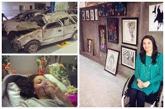

Muniba Mazari Baloch is a Pakistani activist, anchor artist, model, singer and motivational speaker. She became the National Ambassador for UN Women Pakistan after being shortlisted in the 100 Inspirational Women of 2015 by BBC. She also made it to the Forbes 30 under 30 list for 2016. On 27 February 2008, Muniba and her husband were travelling from Quetta to Rahim Yar Khan. Their car met with an accident, in which she sustained several major injuries, including broken bones in her arm (both radius and ulna), rib-cage, shoulder blade, collarbone and spine. Her lungs and liver were also deeply cut. Moreover, her entire lower body was left paralysed. She was taken to a nearby hospital, which was ill-equipped to deal with such a severe case. She was then moved to a hospital in Rahim Yar Khan, and eventually, she was admitted to the Agha Khan Hospital, Karachi. Post-surgery, she was left bed-ridden for two years. Physiotherapy started, which helped her recover enough to use a wheelchair. In June 2019, Muniba was appointed by the current Prime Minister of Pakistan, Imran Khan, to be a part of Pakistan's first ever National Youth Council.
Career
Muniba Mazari has gained fame in multiple areas, as an artist, activist, anchor, model, singer and motivational speaker. Most of her career, however, has been built on painting and motivational speaking.
Awards
- 100 Inspirational Women of 2015 (BBC)
- 500 most influential Muslims of the world
- First Pakistani UN GoodWill Ambassador for UN Women
- Forbes 30 Under 30 - 2016
- The Karic Brothers Awards 2017 in Serbia by The Karic Foundation. (Muniba Mazari received Karic Brothers Award in Belgrade, Serbia under the category of humanitarian services. )